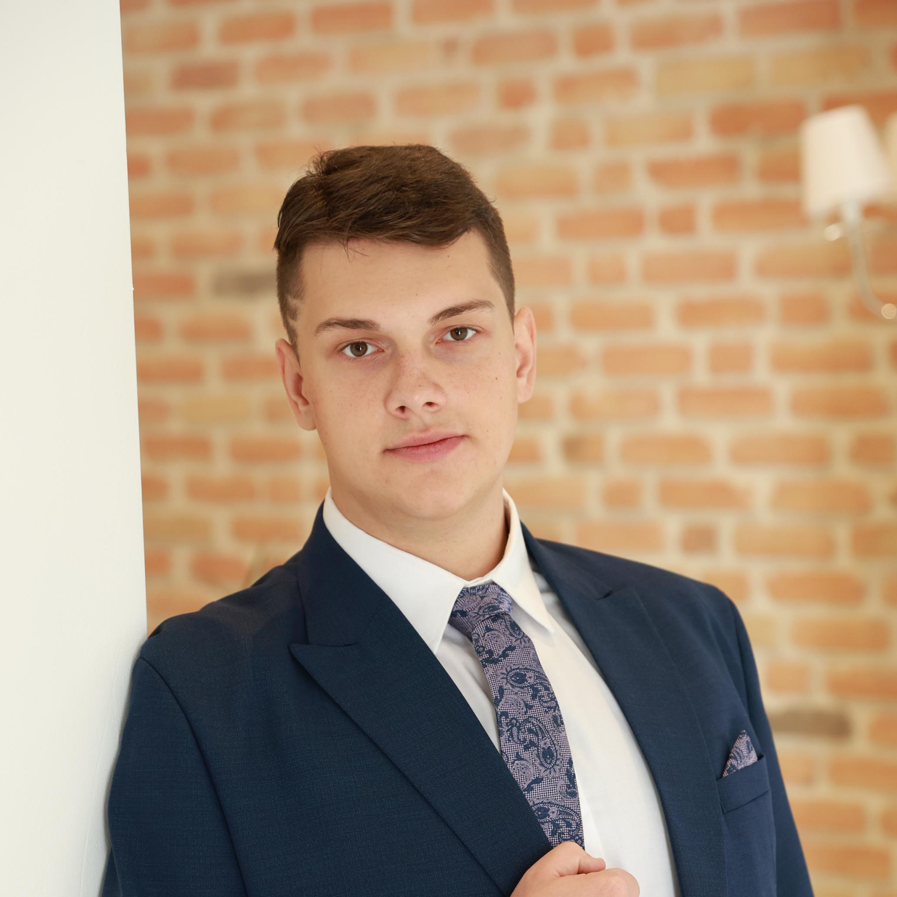

> despre_mine

Mario Samoilă
Computer Science and Engineering Student
Pasionat de ecosistemul Linux și mereu curios să aprofundez concepte sau limbaje de programare noi. În prezent, îmi construiesc o fundație tehnică solidă prin proiecte academice și personale dezvoltate în C/C++ și Python, fiind interesat de modul în care funcționează sistemele la nivel de bază.
// Dincolo de terminal, îmi ocup timpul liber citind literatură science fiction și aprofundând subiecte legate de istoria contemporană, natură sau explorare spațială. De asemenea, mă relaxez optimizând lanțuri de producție în jocuri de automatizare și urmărind serii animate cu un fir narativ complex.
Facultatea de Inginerie, Universitatea "Lucian Blaga" din Sibiu (2024-2028)